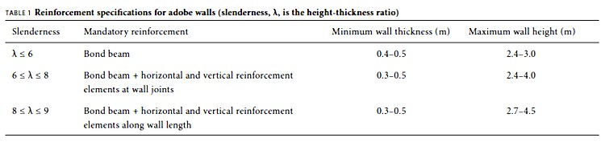

The Peruvian Building Code for Earthen Building
By Julio Vargas Neumann, Marcial Blondet, and Nicola Tarque
Abstract: Every time a strong earthquake occurs in areas where earthen buildings are common, there is widespread damage, economic losses, and death caused by the collapse of earthen houses. In some cases, as in Peru, the academic and professional communities have reacted against this dreadful situation by conducting research to find adequate seismic reinforcement alternatives for earthen buildings, and the resulting solutions have been implemented in a building code.
This paper discusses the effects of earthquakes on earthen dwellings and the technical solutions for seismic reinforcement developed at the Pontificia Universidad Católica del Perú (PUCP) (Catholic University of Peru). The Peruvian Adobe Code is then briefly described, with critical comments on some design considerations. Finally, the authors share some thoughts and reflections on the usefulness of building codes that define requirements for construction of earthen building in developing countries.
Introduction: Earthen Houses in Seismic Areas of Developing Countries
In many developing countries, earthen dwellings are a traditional housing solution because appropriate soils are abundant and inexpensive. Unfortunately, because earthen houses are built informally, every time an earthquake occurs, many of these buildings collapse, causing considerable economic losses and regrettable casualties. The earthquakes that occurred in Huaraz, Peru (1970), and in Bam, Iran (2003), caused the tragic deaths of thousands of people who were crushed under their own earthen houses.
The academic and professional communities have not remained passive in the face of this critical situation. For example, in Peru research on earthen construction in seismic zones has been performed for more than thirty years. Simple techniques have been developed to reinforce earthen buildings, and they have shown their effectiveness both in full-scale laboratory tests of adobe houses and in the field during moderate earthquakes.
The principal research results have been incorporated in the Peruvian Adobe Seismic Design Code (Ministerio de Transportes y Comunicaciones 2000).
This paper describes the effects of earthquakes on earthen buildings and the technical solutions developed at the PUCP.1 It then critically discusses important issues of the seismic design requirements provided in the current Peruvian Adobe Code and finally makes some suggestions to the most impoverished peoples of the world on the usefulness of earthquake resistant code provisions for building safe adobe houses.
Effects of Earthquakes on Earthen Buildings
Earthen houses are warm during the winter and are fresh and cool during the summer because dry soil has excellent thermal properties. However, the adobe walls have adverse seismic properties because they are heavy, weak, and brittle. Colonial earthen houses that still survive have thick walls with small openings. Currently, the land for house construction is scarce in urban areas and new adobe houses are built with slender walls, imitating the architectural configurations of “modern” masonry houses. In Peru most adobe houses are very vulnerable is drastically reduced, and the seismic vulnerability of the house increases accordingly. Traditional adobe houses are extremely vulnerable to earthquakes. Because adobe is brittle, failure is always sudden, and the inhabitants do not have enough time to leave their houses. It is vital, therefore, to provide additional reinforcement to prevent sudden collapse during earthquakes.
Figure 1 Seismically vulnerable adobe house in Peru.
Seismic Reinforcement Systems: PUCP Contribution
Initial research at the PUCP was oriented toward the experimental study of different reinforcement alternatives using locally available materials. A reinforced because they are built in imitation of the architectural features of clay brick masonry houses that have large openings, long and slender walls, and very heavy roofs (fig.1).
During earthquakes the ground shakes in all directions and generates inertial forces that earthen materials should be able to withstand.
Since the compressive strength of adobe is much higher than its tensile strength, significant cracking starts in the regions subjected to tension. Seismic forces perpendicular to the walls produce out-of-plane rocking. Cracking starts at the lateral corners of the walls, where the tensile stresses are higher. Large vertical cracks that separate the walls from one another are thus produced. Front walls that overturn into the adjacent street are usually the first to collapse in an earthquake.
Figure 2 Seismic cracks of un-reinforced adobe house.
Lateral seismic forces acting within the plane of the walls generate shear forces that produce diagonal cracks, which usually follow stepped patterns along the mortar joints. The diagonal cracks often start at the corners of doors and windows because of stress concentration at these locations (fig. 2). If the seismic movement continues after the adobe walls have cracked, the wall breaks into separate pieces, which may collapse independently. In most cases, the adobe walls can sustain the seismic stresses due to vertical shaking. During superficial earth quakes, however, the strong vertical seismic forces may weaken walls and roofs and hasten the structural collapse. If the walls are wet, the strength of adobe masonry concrete tilting platform was used to test full-scale adobe models (figs. 3a and 3b), where the seismic force was represented by the lateral omponent of the weight of the models (Corazao and Blondet 1973). The failure mode was very similar to that observed after an earthquake had occurred (fig. 3b). An internal reinforcing system within the walls—consisting of vertical cane rods anchored to the foundation, combined with horizontal crushed cane strips placed within the mortar every four layers—was quite effective in providing additional strength and deformation capacity to the walls of adobe houses (Vargas 1978; Vargas et al. 2005) (fig. 3a).
Figures 3a
Figures 3b
Figures 3a and 3b Full-scale adobe models over tilting platform: reinforced adobe model with horizontal crushed cane strips showing at the corners (a), and unreinforced adobe model after the seismic simulation test (b).
To test the effectiveness of the interior cane mesh, full-scale seismic simulation tests of adobe dwellings were performed. The interior reinforcement, combined with a wooden viga collar, or bond beam, at the tops of the walls was very effective because cane and adobe masonry are compatible materials. During the most severe seismic movements, the internal mesh prevented the separation of the walls at the corners, thus maintaining the integrity of the structure (Ottazzi et al. 1989).
Unfortunately, the use of interior cane mesh has the following shortcomings: (1) to build adobe walls with internal reinforcement requires significantly more labor than to build traditional adobe walls without reinforcement; (2) cane is not available in all regions, and even in areas where cane is available, it is practically impossible to obtain the required quantity for a massive construction or reconstruction program; and (3) it cannot be used in existing houses.
In 1996 the PUCP began an experimental project to develop reinforcement techniques for existing adobe buildings. U-shaped walls were tested on the seismic simulator with different reinforcement materials, such as wooden boards, rope, chicken wire mesh, and welded wire mesh. The best results were obtained with welded wire mesh nailed with metallic bottle caps against the adobe walls and covered with cement-sand mortar. The mesh was placed in horizontal and vertical strips, simulating beams and columns. After successful testing of four full-scale models on the seismic simulator, this solution was applied to the reinforcement of existing adobe houses located in different regions of Peru (Zegarra et al. 1997). In 2001 an earthquake occurred in Arequipa, in southern Peru, and destroyed most adobe houses in the affected region. The reinforced houses, however, suffered no damage and were used as shelters (Zegarra et al. 2001). The external wire mesh reinforcement thus proved to be successful for protection during moderate earthquakes.
External reinforcement with welded wire mesh, however, also has some disadvantages: (1) it costs around two hundred U.S. dollars for a typical one-floor, two-room adobe house, an amount that exceeds the economic capacity of most Peruvian adobe users; (2) because of economic reasons, the reinforcement is only placed on wall edges, which means that it does not cover the entire wall surface; and (3) the postelastic behavior of these walls shows stiffness and strength degradation, which could lead to sudden and brittle failure during a severe earthquake.
A research project to study the feasibility of using industrial materials for the seismic reinforcement of adobe houses is being developed at the PUCP.
Encouraging results have been obtained as a result of cyclic tests on both reinforced and unreinforced adobe walls (Blondet et al. 2005). Currently, several shake table tests have been performed, and the data are being processed.
Even though effective technical solutions have been developed to reduce the seismic vulnerability of adobe houses, the real problem is far from being solved, mainly because adobe builders do not accept these new construction techniques as their own. The people who build traditional, unreinforced adobe houses are reticent to change, especially if change implies higher skills, more labor, and higher cost. Consequently, it is urgent to explore ways to raise consciousness of the seismic risk among the adobe dwellers, to develop effective training techniques, and to implement programs for the safe construction of earthen buildings, in order to develop a national culture of disaster prevention.

The Peruvian Adobe Seismic Design Code
A seismic design code is an official document that contains technical specifications for the structural design and construction of buildings in seismic areas. Conventional earthquake resistant design philosophy states that buildings must not suffer any significant damage during frequent, small earthquakes, should suffer only repairable damage during moderate earthquakes, and should not collapse during severe earthquakes. The seismic design philosophy of earthen buildings should recognize that the material is heavy, weak, and brittle. It must be accepted, therefore, that significant cracking may occur even during moderate earthquakes. However, to prevent loss of life, the building should be reinforced to prevent brittle collapse during moderate and severe earthquakes.
The first Peruvian Adobe Code was approved in 1985 as an integral part of the National Building Code (Instituto Nacional de Investigación y Normalización de la Vivienda 1987). This code has been used to develop general guidelines to generate seismic codes (International Association for Earthquake Engineering 1986; Programa Iberoamericano de Ciencia y Tecnología para el Desarrollo 1994) and used as a crucial reference for the development of seismic codes in other vulnerable countries such as India and Nepal.
The current version of the Peruvian Adobe Code (Ministerio de Transportes, Comunicaciones, Vivienda y Construcción 2000) has a rather typical format. First, it presents a declaration of scope, general requirements, and definitions of structural elements and components. Then it describes the seismic behavior of adobe buildings, gives the expression for the calculation of the seismic design force, and provides specifications for the dimensioning of the structural systems. Finally, it defines allowable stresses for the masonry and gives specifications for the design of adobe walls. Adobe buildings should be dimensioned by rational methods based on principles of mechanics and with elastic behavior criteria. However, it also recommends placing reinforcement in slender walls to improve their behavior during the inelastic phase.
The seismic action is represented by a lateral force, H = SUCP, where C is the percentage of weight that must be applied laterally as seismic load. C depends on the seismic zone where the building is located. In the highest seismicity zones, C is equal to 0.20. The soil
factor, S, is 1.00 if the soil is good (rock or very dense soil) and 1.20 when the soil is soft or intermediate. The use factor, U, is 1.00 for houses and 1.20 for buildings such as schools or medical facilities. The weight P must include 50% of live load. Therefore, an adobe house located at a place of high seismicity with intermediate soil conditions must be designed to elastically withstand a lateral force
H = SUCP = 1.20 × 1.00 × 0.20 × P = 0.24 P or almost one-fourth of its total weight.
Past earthquakes have shown that adobe buildings suffer much more damage when located on soft, rather than on stiff, soils. Hence, it seems to be necessary to review the Peruvian Adobe Code in order to increase the soil coefficient for adobe buildings on intermediate soils, to allow earthen construction only on rock or very dense soils.
In the Peruvian code, the country is divided into three seismic zones. The coastal region has the highest seismicity (zone 3), and construction of two-story adobe houses is not allowed there. Two-story adobe houses are only allowed in the zones of lower seismic hazard: zone 2, located in the Andean mountains, and zone 1, within the Amazon jungle, as long as the second story is built with a lightweight material such as quincha (wooden frames filled with crushed cane and plastered with mud).
Some general recommendations for good seismic behavior are that adobe houses must have sufficient wall density in both principal directions, with floor plans as symmetric as possible. Wall openings should be small and centered, and reinforcement should be provided to tie the walls together. Foundations and plinths should be built with cyclopean concrete (unreinforced concrete mix, made with medium and large stones) or stone masonry.
The adobe walls must be designed to elastically withstand seismic forces and to transmit them to the foundation. The allowable stresses are: (1) compressive strength of adobe blocks, fo = average strength of 6 cubes, or fo= 12 kgf/cm2 (170.7 psi); (2) compressive strength of adobe masonry, fm = 0.25 f’m, where f’mis the compressive strength of adobe masonry piles, or fm = 2 kgf/cm2 (28.4 psi); (3) crushing strength of adobe masonry = 1.25 fm; (4) shear strength of adobe masonry, Vm = 0.40 ft , where ft is the ultimate strength of small walls tested under diagonal compression, or Vm = 0.25 kgf/cm2 (3.6 psi). Adobe blocks are usually rectangular or square in plan. The cubes required for compression tests are made by cutting adobe blocks in such way that the size of the cube is the thickness of the block. Masonry piles are made with four or five adobe blocks joined with mortar and placed vertically on top of one another. Diagonal compression specimens are small square walls. Their side measures approximately the length of one and a half blocks. The specimens are tested by applying a compressive force along their diagonal.
All adobe walls must be adequately braced by transverse walls, buttresses, or reinforced concrete columns. Horizontal braces can be provided by wooden or concrete bond beams. The code provides geometric specifications to guarantee reasonable seismic behavior. Maximum wall length between braces is twelve times wall thickness. Openings must be centered and short (fig. 4).
Figure 4 Code specifications for wall openings (L = length of wall, a = opening length, b = distance from opening to corner of reinforcement, e = wall thickness, and h = wall height).
The presence and amount of reinforcement required depend upon wall slenderness, λ (ratio of wall height over wall thickness, λ = h/e) (see fig. 4). The reinforcement of adobe walls can be made out of cane, welded wire mesh, or concrete.
The code requires the use of bond beams on the tops of all adobe walls. This requirement is reasonable because it is consistent with experimental evidence that shows that the bond beam integrates the walls and helps to delay collapse of the walls after they have developed vertical cracks at the corners. Additionally, the use of bond beams contributes to a more effective distribution of the weight of the roof over the walls and includes the roof in the overturning control of exterior walls.
Table 1 shows that walls with slenderness ratios of λ ≤ 6 can be built without reinforcement. This specification contradicts field and laboratory observations that walls without reinforcement show brittle failure (though not collapse) after they have cracked in response to the seismic action. For walls with slenderness ratios between 6 and 8, the code requires horizontal and vertical reinforcement elements only at wall intersections. However, the collapse of heavily cracked adobe walls that have separated into independent pieces can only be avoided by having a continuous reinforcement configuration along the entire wall.
The code also allows the construction of slim walls, with slenderness ratios between 8 and 9 (and up to 12 with technical validation), that must be integrally reinforced. It would seem too risky to build such slender walls in zones of high seismic hazard. It seems, therefore, that these code specifications are not conservative and are unsafe. Continuous reinforcement should be mandatory for all adobe walls, independent of their slenderness, at least for zones of high seismicity and where collapse of adobe houses has been reported. The maximum slenderness requirements should depend on the seismicity of the building site.


Conclusion
The aim of any building code for earthquake resistant design of adobe buildings should be to disseminate the construction knowledge that will guarantee safety and be economical for the users.
The earthquake resistant code provisions for adobe are addressed to professionals involved in the design and construction of adobe buildings. In most countries, only certified professionals are legally allowed to approve and sign off on design projects, and these professionals belong to the formal system; very few people live in earthen houses designed in accordance with the code.
Most of the people that build and live in adobe houses do not know or use the code; therefore, most adobe codes for seismic areas do not fulfill their aim because they do not reach the users that they should benefit.
In order to take care of the needs of the majority of people who do not know or use the code, it is necessary to use tools that complement the code, such as construction manuals and booklets, as well as educational campaigns carried out through popular organizations, local governments, and the media. This will help disseminate the basic concepts of earthquake resistant construction for adobe houses.
The code provisions should faithfully collect the acquired knowledge from research programs and from observation of the effects of past earthquakes. This knowledge must be translated into simple and direct recommendations that can be implemented by the dwellers, who have limited technical support. The acquired knowledge should not be distorted with less-demanding requirements in an effort to reach a greater number of users. This would be a serious blunder, which would be equivalent to lowering the quality of medicine in order to make it more affordable to more patients.
The contents of the code are the result of considerable research efforts to reduce the consequences of earthquakes, especially in highly populated areas. A well-conceived code is an indispensable tool to guide the professional community in the design and construction
of affordable and safe earthen buildings. It is clear that, in order to succeed, any massive dissemination and implementation program on safe earthen construction must have political support from the government. The professional community, however, has the responsibility of disseminating among adobe builders the knowledge to mitigate the risk of damage and loss of life in earthen houses in seismic areas, which today has reached unacceptable levels.